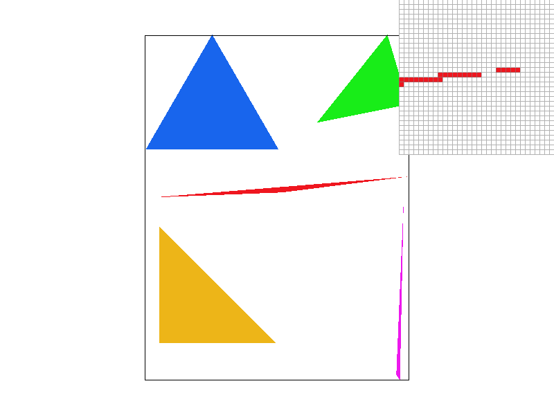
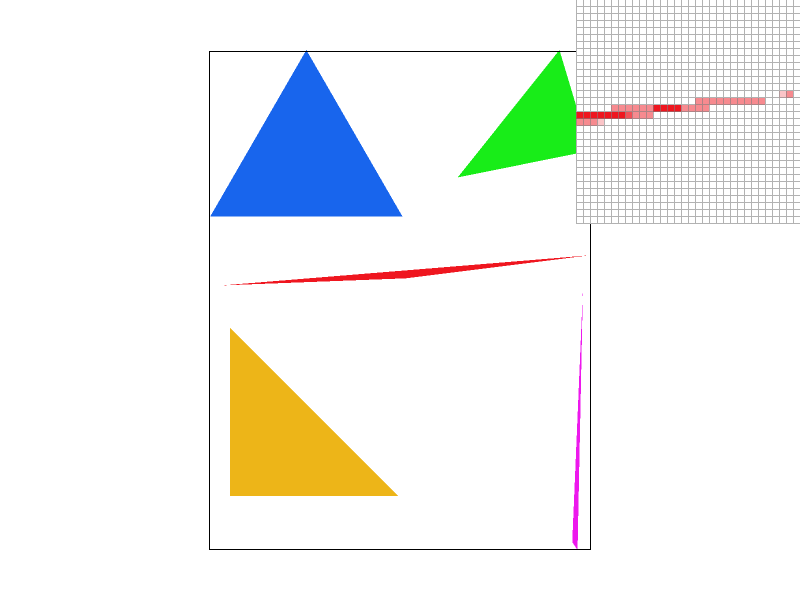
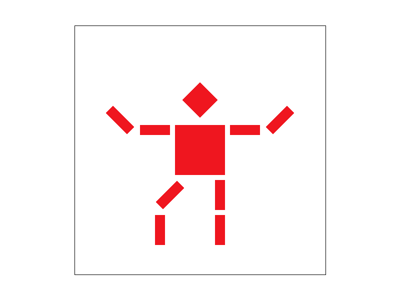
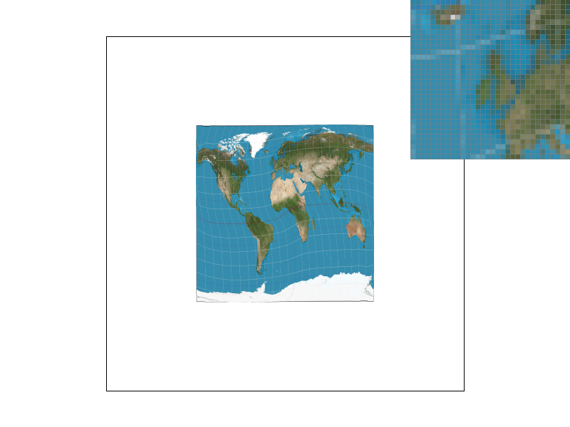
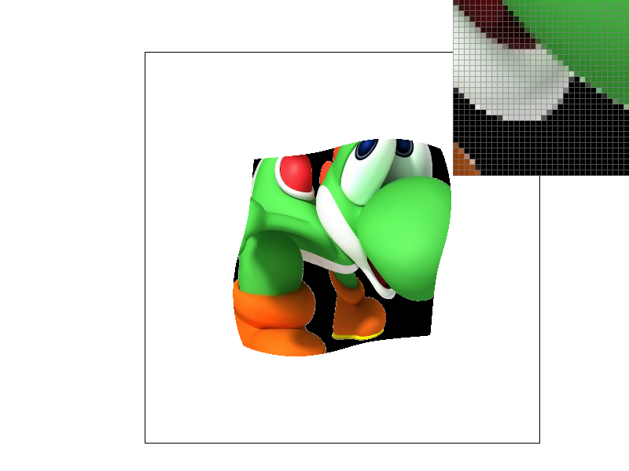
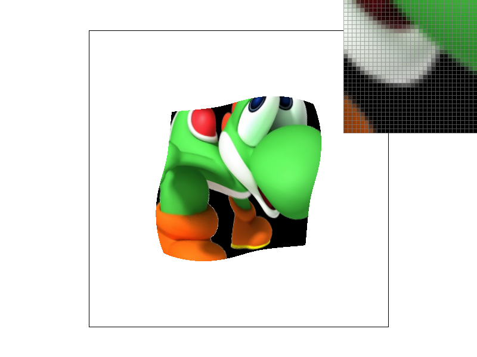

CS 184: Computer Graphics and Imaging, Spring 2021
Project 1: Rasterizer
Mie Haga, CS184-mie-h
Overview
Give a high-level overview of what you implemented in this project. Think about what you've built as a whole. Share your thoughts on what interesting things you've learned from completing the project.
Section I: Rasterization
Part 1: Rasterizing single-color triangles
- Walk through how you rasterize triangles in your own words.
For each pixel on the screen, see if the pixel lies within a triangle which is defined by th e three coordinates given. If the pixel is within the triangle, rasterize the pixel point, which means, fill the pixel in with the specified color.
I made the process more efficient by limiting the number of pixels the code checks. If the axis values of a point aren’t close to the triangle, I don’t bother checking if it is inside the triangle.
- Explain how your algorithm is no worse than one that checks each sample within the bounding box of the triangle.
My algorithm is better since it first finds the minimum (x, y) and maximum (x, y) values of coornidates given, and filter out all the pointer outside the rectangle defined by the two points. In other word, the algorithm “samples only within the bounding box of the triangle”, as specified on the spec.
Because my code doesn’t sample anything close to the triangle, it samples less points than the bounding box. And since I only sample each point once, it should be more efficient than one that checks each sample within the bounding box of the triangle.
- Show a png screenshot of basic/test4.svg with the default viewing parameters and with the pixel inspector centered on an interesting part of the scene.
 basic/test4.svg
basic/test4.svg
Part 2: Antialiasing triangles
- Walk through your supersampling algorithm and data structures. Why is supersampling useful? What modifications did you make to the rasterization pipeline in the process? Explain how you used supersampling to antialias your triangles.
Algorithm and data structures; modification I made :
I resized the sample_buffer to be a vector with datatype Color that has the size of (the number of pixels) * (the number of subdivisions per pixel).
In resolve_to_framebuffer(), for each pixel, I added inner loops that go through each subpixel of the pixel, and average the colors you get out of the subpixels. Each subpixel is spaced evenly inside the pixel. Then, I check each subpixel if it is inside the triangle, and I average the results of the subpixels to determine the color of each pixel. For example, if the sample_rate is 4, then the pixel is divided into 4 subpixels, and if three of them are in the triangle, then the color will be 75% of original.
The overall approach is to supersample the triangle and get an average color for each pixel.
Supersampling is useful since it provides a high image quality. It can reduce the jagginess for low resolution images.
Supersampling can be used to antialias. This is possible by sampling more subpixels (actually subparts of a pixel), and calculate the average color of the pixels. Taking the average of it makes reduces the jaggies and makes the transition of color smoother between pixels.
- Show png screenshots of basic/test4.svg with the default viewing parameters and sample rates 1, 4, and 16 to compare them side-by-side. Position the pixel inspector over an area that showcases the effect dramatically; for example, a very skinny triangle corner. Explain why these results are observed.
As you increase the sample rates, you will be taking a lot more samples out of the image. Therefore, the jaggies will be reduced, and the border of the triangles will be smoother.

basic/test4.svg rate1

basic/test4.svg rate4
basic/test4.svg rate16
Part 3: Transforms
- Create an updated version of svg/transforms/robot.svg with cubeman doing something more interesting, like waving or running. Feel free to change his colors or proportions to suit your creativity. Save your svg file as my_robot.svg in your docs/ directory and show a png screenshot of your rendered drawing in your write-up. Explain what you were trying to do with cubeman in words.

svg/transforms/robot.svg
My cubeman is dancing the flamenco dance. I want to go dance the flamenco dance.
Section II: Sampling
Part 4: Barycentric coordinates
- Explain barycentric coordinates in your own words and use an image to aid you in your explanation. One idea is to use a svg file that plots a single triangle with one red, one green, and one blue vertex, which should produce a smoothly blended color triangle.
The barycentric coordinate system is a coordinate system for triangles that shows the influence of each vertex on a point in the system. Depending on how close a point in the system is to each vertex of the triangle, that point will have a closer value to the vertex it is closest to than the vertex it is further from.
For example, given a triangle with one red, one green, one blue vertex, a point on the triangle closer to the blue vertex than the green vertex will be much more blue in color than green, while a sample closer to the green vertex will be much more green than blue
More specifically in mathematical term, you can get the barycentric coordinate from the equation :
Where A, B, C are the coordinates of the triangle, and alpha, beta, gamma is given below :
Part 5: "Pixel sampling" for texture mapping
- Explain pixel sampling in your own words and describe how you implemented it to perform texture mapping. Briefly discuss the two different pixel sampling methods, nearest and bilinear.
Nearest sampling takes the closest texal to the point we wish to sample and uses that texal’s result for the sample. Bilinear takes the closest 4 texals from the sample, and returns an interpolation of the results, calculated by interpolating the distance from the sample point to each of the four texals.
- Check out the svg files in the svg/texmap/ directory. Use the pixel inspector to find a good example of where bilinear sampling clearly defeats nearest sampling. Show and compare four png screenshots using nearest sampling at 1 sample per pixel, nearest sampling at 16 samples per pixel, bilinear sampling at 1 sample per pixel, and bilinear sampling at 16 samples per pixel.
svg/texmap/test2.svg nearest rate 1
svg/texmap/test2.svg bilinear rate 1

svg/texmap/test2.svg nearest rate 16
svg/texmap/test2.svg bilinear rate 16
- Comment on the relative differences. Discuss when there will be a large difference between the two methods and why.
Because nearest sampling uses the same texal for multiple points, it would be more blocky than bilinear, which shows a different result depending on the sample’s location from its nearest point. This will be most obvious when you have an area of an image with vividly distinct colors close to one another. Bilinear would show smoother color transition.
Part 6: "Level sampling" with mipmaps for texture mapping
- Explain level sampling in your own words and describe how you implemented it for texture mapping.
The purpose of level sampling is to make the image processing faster. Keeping track of all the pixels with high resolution on graphic will be heavy and slow. Making the graphic resolution lower will make the process faster by keeping track of fewer pixels on mipmap.
Level sampling is done using a mipmap composed of multiple copies of the same image at different resolutions. Then, depending on the resolution of the image on screen, a sample is taken from the copy of the image that is closest in size to the screen image. As the level goes higher, the screen image gets smaller, so a smaller copy of the image is used for sampling.
This is fast since whenever you want the image at certain level, you can get the image out from mipmap memory. This does not require you to a lot less calculation for 256x256 from 512x512 for instance.
I implemented it by using a mipmap class which contains multiple levels of the same image with different sizes. Then, depending on the how big the image is displayed on screen, the code samples texals from the appropriate image level in that vector.
- You can now adjust your sampling technique by selecting pixel sampling, level sampling, or the number of samples per pixel. Describe the tradeoffs between speed, memory usage, and antialiasing power between the three various techniques.
----------------content here--------------
- Using a png file you find yourself, show us four versions of the image, using the combinations of L_ZERO and P_NEAREST, L_ZERO and P_LINEAR, L_NEAREST and P_NEAREST, as well as L_NEAREST and P_LINEAR.
L_ZERO and P_NEAREST

L_ZERO and P_LINEAR
L_NEAREST and P_NEAREST

L_NEAREST and P_LINEAR